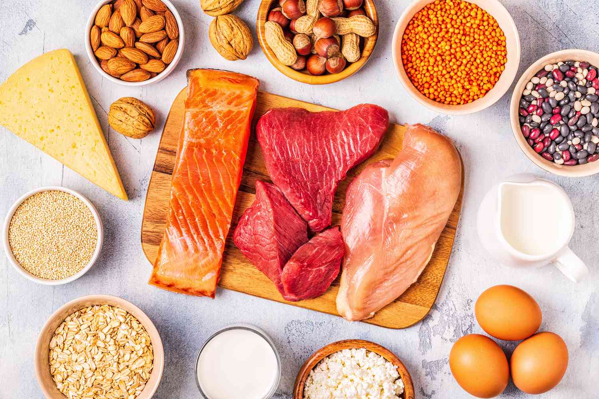

Healthy Campus
Healthy Campus
Fitness
Football
Football will also help to improve your overall cardiovascular health and you should see your endurance increase over time if it’s played frequently. Football is a combination of running, walking, sprinting and kicking. This can bring benefits including:
- Increase stamina
- Reduced body fat
- Improved cardiovascular health
- Improved coordination
Gym

Usually, people go to the gym to keep fit and have a body they can be proud of. People go to the gym to escape their everyday problems and be at peace with their bodies. They release stress while they work out. However, some people just come to show their bodies and listen to compliments from other people. It is very important to go to the gym only for yourself, to become healthy and strong, to have a healthy mind in a healthy body, and not to just show your body to other people, no matter how beautiful it looks.
Running

Jogging or running is a popular form of physical activity. About one in 5 Australians try running (or jogging) at some stage in their life. Regular running or jogging offers many health benefits. Running can:
- help to build strong bones, as it is a weight bearing exercise
- strengthen muscles
- burn plenty of kilojoules
- help maintain a healthy weight
Nutrition
Protein
Protein can come from many different types of foods. Protein is a good source of food to build muscle, repair muscle and recover faster.Here are a few examples of foods that are high in protein:
- Chicken
- Eggs
- Greek Yoghurt
- Cottage Cheese
Carbohydrates

Fast food is typically affordable. It may also be relatively inexpensive to purchase some junk items from fast food restaurants, depending on the type you want to consume. The bad truth is that \buying nutritious food at the food store or eating out is sometimes more expensive than choosing fast food.Here are a few examples of foods that a high in Fat:
- Butter
- Bacon
- Pork Sausages
- Ice-Cream
Fats
The most common and abundant forms are sugars, fibers, and starches. Foods high in carbohydrates are an important part of a healthy diet. Carbohydrates provide the body with glucose, which is converted to energy used to support bodily functions and physical activity.Here are a few examples of foods that a high in Carbohydrates:
- Bread
- Beans
- Popcorn
- Potatoes
Mental Health
Mental health includes our emotional, psychological, and social well-being. It affects how we think, feel, and act. It also helps determine how we handle stress, relate to others, and make healthy choices. Mental health is important at every stage of life, from childhood and adolescence through adulthood.